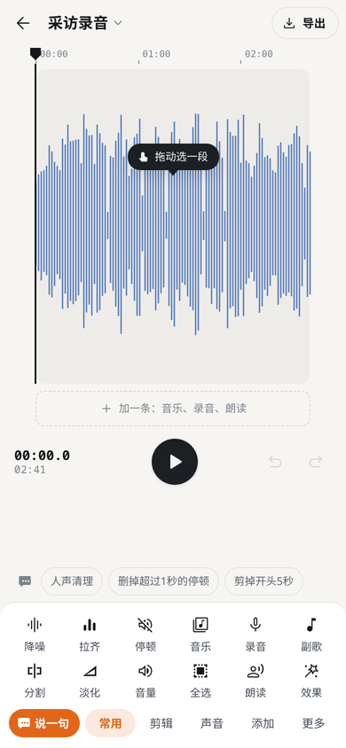
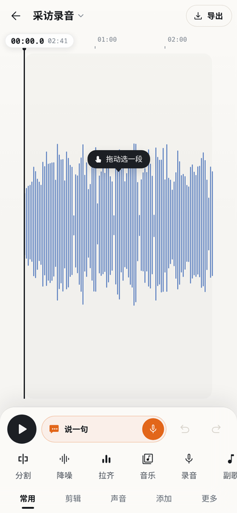
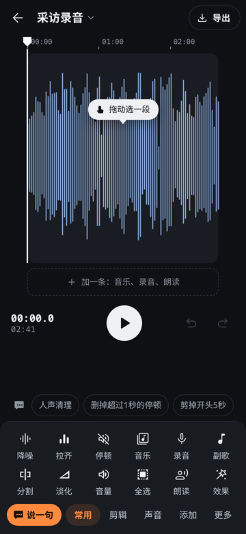
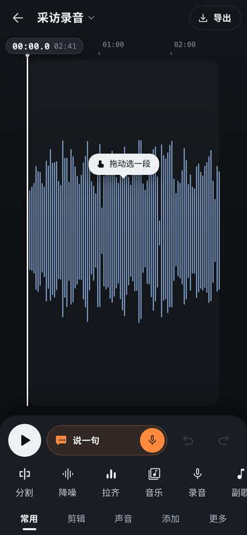
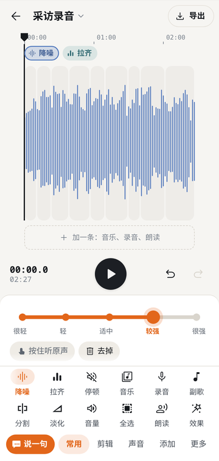
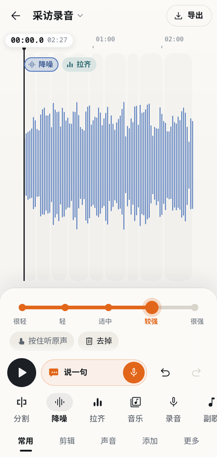
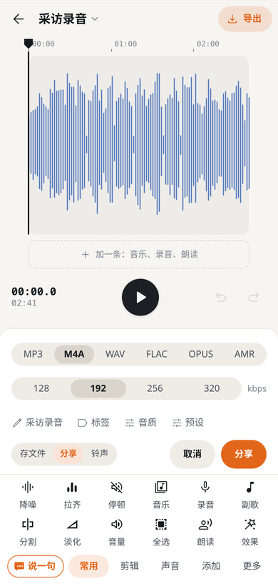
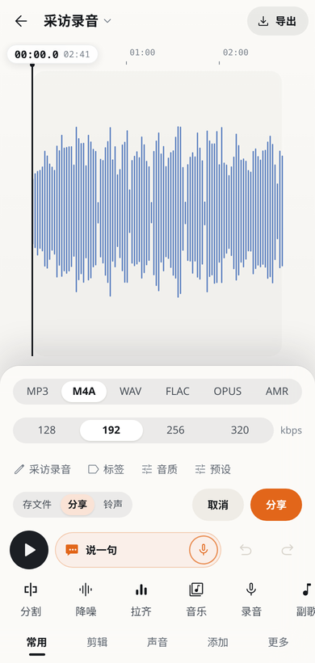
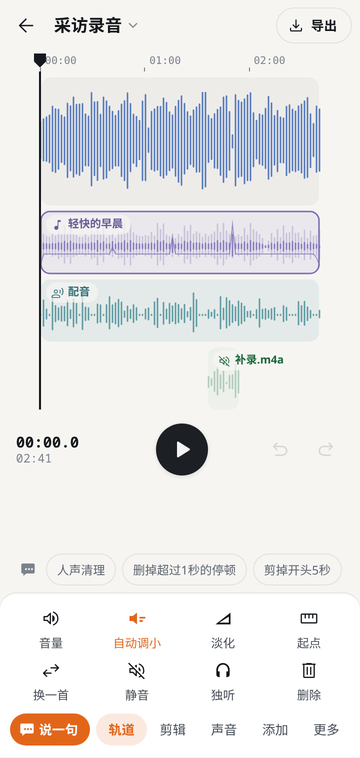
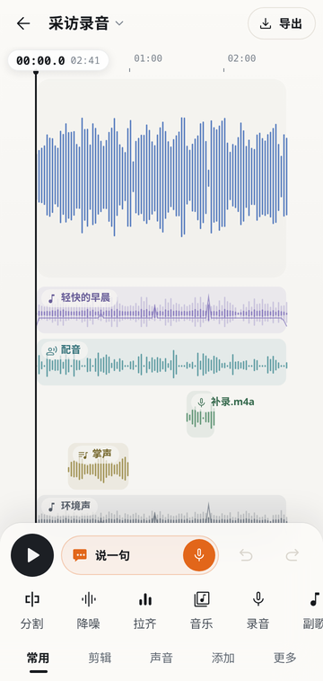

| 从左右边缘往里滑 | 系统返回：收起开着的设置，再放开选中的。所以波形上要拖的东西都离边 32 dp 以上；按钮离边近没关系，点击不受影响 |
| 点亮着的工具 | 收起它的设置（设置留着）；点别的工具或分类也会先收起 |
| 点 | 放播放头；点选区外面就放开选区；点下面的轨道就选中那一轨 |
| 在波形上横着拖 | 选一段（吸附到开头、结尾、接缝、标记、播放头；手指过了开头或结尾就算开头、结尾；放大时拖到离边 64 dp 以内画面自己滚） |
| 竖着拖 | 轨道多到放不下时：轨道在主线下面上下滚，往上滚时工具这一行让开；不然交给页面 |
| 在工具这一行横着滑 | 看后面的工具（带吸附）；右边总露出半个 |
| 按住 0.4 秒再拖 | 拿起选区或一个片段，挪到别处；靠近左右时画面自己滚 |
| 拖选区下面的圆点 | 改选区的起点或终点 |
| 双击 | 选中整个片段 |
| 拖时间刻度、双指 | 滚动、缩放（电脑：滚轮滚动，Ctrl+滚轮缩放） |
一张画布，一个工具坞。画布上是名字、时间和声音，中间没有分隔；工具坞是唯一浮在上面的一层：头上是播放、说一句、撤销，下面一行工具、一行分类。打开一个设置，它从工具坞里往上长，盖住画布的下面；波形变矮但整条留在上面，时间位置、播放键和工具一动不动
步数一样：今天这条路本来就短。不同的是页面上只有声音、播放和四个入口；导出也不离开工作台。只留一段：2 步，和今天一样。
0打开。提示只在第一次出现。
1拖一下，第一个分类变成「选中的」。
2删除，后面的合上来。
3–5导出 → 导出 → 系统选位置保存。
今天：拖选、⋯、剪切、点位置、全部工具、展开时间线、粘贴（粘贴进了「最近用过」后是 6 步）。
1选一段。第一次会提示可以按住拖走。
2按住拖：原处合上，要放的地方让开。
松手就放好，还是选中的，可以接着调。
很远时点「移动」，滚过去点位置，「放这里」；「放回去」就不动。
找到的第一段已经选好，长度记住上次的。「做铃声」只留这一段并把导出切到铃声，结尾自动淡出 1 秒。第一次系统还会问一次「修改系统设置」权限，两边都一样。
1「副歌」在常用里。
几段候选标在波形上，30 秒那一段已选中。
2–3做铃声 → 设为铃声。
设好了。
「人声清理」是一句话配方：点「说一句」，键盘上面第一个例句就是它。也可以一项一项来（降噪、拉齐、停顿、删掉，共 4 步，都在常用里：点下一个工具，上一个的设置自己收起，工具都不挪），区别是每一项事后都能改。
1–2说一句 → 人声清理。
要删的停顿画在波形上，要加的设置是虚线标签。
3「应用」一次改完，一次能撤。
之后点「降噪」标签：改力度、按住听原声、或去掉。
音乐铺满整段、开头结尾淡化、说话时自动变小，这些都是默认的，所以选完就好了。它在同一个工作台里成为下面一轨，人声还能继续剪。
1「音乐」在常用里。
2选一首（上面可以换成手机文件或在线音乐库）。
音乐在下面，人声出现的地方它就压低。
要改多小：点那一轨 → 自动调小。
今天的插入工具默认插在开头，要拖滑块找到位置。现在就插在播放头，录的时候那里一点点让开。从音频库新建「把几段接起来」和今天一样是 3+N 步，打开就是工作台，每段开头一个标记。
1–2点 1:02 → 「录音」。
3红色的录音键在设置第一行；「插入 / 叠加」和「不要了」「完成」在最后一行。后面的声音被推开。
4「完成」，录音落在那里，选中着。
接起来的三段，标记就是文件名。
「说一句」在播放键旁边，点一下就能打字（键盘上面有例句，点例句是 2 步）。换来的是：计划画在波形上而不是另一页；句子里的降噪、拉齐也在这一步里，不再一个工具一个页面地走。
1–3说一句 → 打字或说话 → 发送。
删的、淡出的都画在波形上；可以切到「改后」听。
4「应用」后接着是导出，MP3 已选好。
没看懂的部分不执行，给几个说法可选。
格式、清晰度在第一层；音质、标签、预设、每段一个文件往下一层。生成时可以取消。
1–3导出 → 分享 → 分享。
生成中，可以取消。
4系统的分享。
选着一段时，第一行就是「整段 / 选中的」。
什么都不收起：边听边点「分割」。
全局条在刻度下面；工具坞不动。
例句只在打字时出现；工具和分类让给键盘。
主线固定在上面，轨道在它下面。
轨道滑到主线下面，工具这一行让开；滑回顶上就回来。
主线先让出高度，正在调的那一轨留在视野里。
一行，往左滑看后面的；打开设置时这一行不重排、不滚。
第一个分类变成「片段」，接缝在里面。
第一个分类变成「轨道」。
只标在波形上：红色斜线 24 dp 归系统返回；红虚线 32 dp 以内没有波形上能拖的东西；橙虚线是整体视图里声音的开头和结尾（40 dp）。底栏照常用满宽度。
开头仍然停在 40 dp，左边空出来。
选到结尾，圆点的触点范围往里收。
降噪的设置开着时，从左边缘往里滑：设置收起，降噪留着。
新建 → 录一段，直接在工作台里录。
设置放不下时在自己里面滚动；录音键和时间留在最后一行。
下面是全局条，拖它或拖刻度换位置；标记在刻度上。
补录那一轨静音了。
边拖边听，回去就留着。
直接在波形上点、拖。
点一处可以留下它。
选的时候吸附到拍子。
处理好的部分先能听。
标签变红，点开是原因和两个出路。
授权写在每首后面。
生成后插在播放头。
生成后成为下面的「配音」轨。
按住撤销打开（在「更多」里亮着）；点一步就回到那里。
试听速度不是 1× 时，时间旁边会写着。
今天工具面板、选区「⋯」、新建里的每一项，加上任务里提到的每个功能。步数从工作台静止时算：选一段算 1 步，点分类算 1 步。
| 功能 | 现在在哪 | 步数 | 今天 |
|---|---|---|---|
| 常用（打开时就在这里，一下就到）：降噪 拉齐 停顿 音乐 录音 副歌 分割 淡化 音量 全选 朗读 效果 | |||
| 说一句 | 播放键旁边的长条（任何时候都在，打字时变成键盘上面的句子框） | 1 | 0（输入框常驻） |
| 降噪、音量拉齐、效果 | 常用：点一下就加上，设置从工具坞里往上长，边调边生效 | 1 | 3（工具页，存成新版本） |
| 删掉停顿 | 常用 → 停顿 → 删掉 N 处 | 2 | 3 + 页面 |
| 配背景音乐 | 常用 → 音乐 → 选一首（来源：音频库 / 手机文件 / 在线） | 2 | 5，存成新音频 |
| 插入录音 | 点位置 → 录音 → 红色录音键 → 完成（插入或叠加） | 4 | 7 + 2 个页面 |
| 找副歌、做铃声 | 常用 → 副歌 → 做铃声 | 2 | 2 + 页面 |
| 分割（在播放头） | 常用 → 分割 | 1 | 2 |
| 两头淡入淡出 | 常用 → 淡化：一下就按常用值淡化，再调 | 1 | 3 |
| 整段音量 | 常用 → 音量 | 1 | 3 |
| 全选 | 常用 → 全选 | 1 | — |
| 文字读出来 | 常用 → 朗读 → 生成 | 2 | 新建里，单独页面 |
| 剪辑：分割 全选 副歌 停顿 标记 节拍 分段 片段 接缝 循环到 | |||
| 标记、对齐节拍、每隔几秒 / 平均 / 按标记分段、片段顺序、接缝交叉淡化、一分钟循环 | 剪辑 → 点 | 2 | 2–3，节拍、循环要跳页；分段只能说一句 |
| 声音：降噪 拉齐 音量 淡化 修复 效果 变声 变速 声道 分离 倒放 曲线 | |||
| 修复、变声、快慢与音高、左右声道、人声分离、倒放、音量曲线 | 声音 → 点（点开就加上） | 2 | 3（工具页，存成新版本） |
| 改或去掉已经加的声音设置 | 点波形上方的标签 → 改，或「去掉」 | 1–2 | 不能，只能切回旧版本 |
| 添加：录音 音乐 音频 文件 视频 朗读 字幕 空白 克隆（有剪贴板时最前面是粘贴） | |||
| 插入音频（音频库、文件、视频） | 添加 → 音频 / 文件 / 视频 | 2–3 | 3 + 页面 |
| 字幕配音、插入静音、克隆声音 | 添加 → 字幕 / 空白 / 克隆 | 2 | 新建里或工具页 |
| 粘贴（来自另一段音频） | 添加 → 粘贴 → 点位置 → 放这里 | 4 | 3 + 插入工具页 + 存新版本 |
| 在线音乐库 | 音乐 → 在线（未配置时就地说明未接通） | 3 | 2 + 页面 |
| 多轨混音 | 插入时选「叠加」；点一轨：音量、自动调小、淡化、起点、换一首、静音、独听、删除 | 2–3 | 2 + 页面 |
| 串烧 | 添加 → 文件（多选）；剪辑 → 接缝 | 4+N | 2 + 页面 |
| 更多：跳到 速度 循环 频谱 全部 改名 详情 历史 另存 转文字 工程包 删除（点名字或时间也到这里） | |||
| 试听速度、循环、频谱、跳到、显示全部 | 更多 → 点 | 2 | 1 |
| 改名、详情与署名、历史、另存一份、工程包、删除这段音频 | 更多 → 点（删除要确认） | 2–3 | 音频库里或工具页 |
| 音频转文字（未接通） | 更多 → 转文字：就地说明未接通，可以导出音频 | 2 | 2 + 页面 |
| 选中一段之后，第一个分类是「选中的」：删除 只留 移动 淡化 音量 复制 分割 重复 降噪 精确 节拍 导出 | |||
| 删除、只留 | 拖选 → 点 | 2 | 2 |
| 剪切 + 粘贴（移动） | 拖选 → 按住拖走；或 移动 → 点位置 → 放这里 | 2 / 4 | 7 |
| 复制 | 拖选 → 复制 → 点位置 → 放这里 | 4 | 3 + 粘贴 3–4 |
| 淡化（选区） | 拖选 → 淡化 → 淡入 / 淡出 | 3 | 3–4 |
| 调这段的音量 | 拖选 → 音量 → 拖滑块 | 3 | 4 |
| 分割（在两头）、重复一遍、精确时间、对齐节拍 | 拖选 → 点 | 2 | 3（节拍还要跳页） |
| 只给这段做声音处理 | 拖选 → 降噪；其他的：拖选 → 声音 → 点（波形上方一条色带） | 2–3 | 不能 |
| 只导出这一段 | 拖选 → 导出（第一行就是「选中的」） | 2 | 3 |
| 边缘吸附到过零点 | 每次选都自动做 | 0 | 3 |
| 片段的音量、淡化、接缝 | 双击片段 → 第一个分类变成「片段」→ 点 | 2 | 4 |
| 片段顺序 | 按住片段拖 | 1 | 3 |
| 取消选择 | 点选区外面，或系统返回 | 1 | 1 |
| 播放条（紧贴声音下面） | |||
| 播放 / 暂停、只听选区 | ▶（选着一段时只放这段） | 1 | 1 / 2 |
| 撤销 / 重做 | 播放键右边（拿着一段、录着一段、看着计划时，撤销先撤掉这个） | 1 | 1 |
| 历史列表 | 按住撤销 | 1 | 0（列表占半页） |
| 缩放 | 双指 | 1 | 1 |
| 说一句 | |||
| 一句话、配方、例子、语音输入 | 说一句 → 打字 / 点键盘上面的例句 / 麦克风 | 1–2 | 1–2 |
| 计划审阅 | 就在工作台：标在波形上，勾掉、调数字，「应用」或「不改了」 | — | 单独页面 |
| AI 改写 | 计划里没看懂的部分 → AI | — | 自动问 |
| 导出：右上，设置从工具坞里长出来 | |||
| 存文件 / 分享 / 设为铃声、通知音、闹钟 | 导出 → 选 → 导出（或 取消） | 2–3 | 2 + 两个页面 |
| 格式、清晰度；标签、音质、预设、每段一个文件 | 导出里；后三个点开就在原地展开 | 2–3 | 同一页 |
| 新建（音频库里，不在工作台） | |||
| 录一段 | 直接打开工作台，录音开着 | — | 录音页，录完再打开 |
| 手机里的文件、视频里的声音、在线音乐、把几段接起来 | 导入后打开工作台（接起来的每段开头一个标记） | — | 同 |
| 文字读出来、字幕配音 | 打开一段空白的工作台，朗读 / 字幕开着 | — | 单独页面 |
| 一段空白、先拿示例试试、批量处理、导入工程包、设置、账号 | 不变，在音频库 | — | 同 |
标题栏、时间刻度、主线（和轨道）在同一块画布上；工具坞从下面盖上来：头（播放、说一句、撤销重做）、一行工具、一行分类。打开设置时，设置长在头的上面，工具坞变高、盖住画布的下面；时间轴不动（同一时刻在屏幕上的横向位置不变），主线的高跟着没被盖住的部分变、波形整条留在上面，播放键不动。
| 第六轮 360×780 | 第七轮 360×780 | 第六轮 390×844 | 第七轮 390×844 | |
|---|---|---|---|---|
| 静止：看得见的画布 | 390（主线 306） | 554（主线 504） | 439（355） | 618（568） |
| 静止：下面占的 | 播放条 64 + 留给设置 110 + 托盘 164 = 338 | 工具坞 174（头 56、工具 62、分类 48、边 8） | 338 | 174 |
| 开着降噪 | 390 | 450 | 439 | 514 |
| 开着朗读 | 368 | 429 | 432 | 493 |
| 导出（选中一段，展开音质） | 150 | 214 | 209 | 278 |
| 打字（说一句，键盘 268） | — | 240（主线 192） | — | 304（256） |
| 开着设置时主线的高（降噪 / 朗读 / 导出） | 不变 306 | 402 / 381 / 274 | 不变 355 | 466 / 445 / 338 |
| 五条轨道、调一轨（自动调小） | — | 462（主线让到 114，那一轨在 160–212） | — | 526（178） |
| 播放键的位置（离屏幕顶） | 446，导出时升到 208 | 618，永远 | 495 | 682，永远 |
波形本身不跟着变大：竖着最多 320（第六轮约 300），画布多出来的地方是主线上下的空气，和多条轨道时的轨道。一条声音变高不会多出信息。工具坞长高、键盘上来时（第八轮）：时间轴不动，主线的上沿不动，主线的高缩到没被盖住的部分（最低 96，画布至少留 150），竖条跟着缩，所以整条波形始终在工具坞上面；选区的底色、圆点、声音标签、标记和音量曲线都跟着这个高度。有多条轨道时，主线先让出高度（到 96），正在调的那一轨滚进视野；再不够，下面的轨道被盖住。
地面是画布：浅色从 #FBFAF7 渐到 #F6F5F2（到 46% 处），深色从 #13161B 渐到 #0E1013；主线的底是 surface3 的 15%。工具坞是唯一浮起来的一层：浅色 rgba(252,251,249,0.80)、深色 rgba(30,33,40,0.80)，背后模糊 24、饱和 1.4，上边圆角 24，向上的阴影 0 −12 32 rgba(28,30,38,0.08) 加 0 −1 0 rgba(20,24,30,0.05)（深色 0.40 / 白 0.05）。有要拍板的事时工具坞浮得更高：阴影 0 −16 44 0.15（深色 0.55），主按钮实心橙。浮在画布上的小标签（时间）用同一种玻璃：rgba(255,255,255,0.82) / rgba(38,42,50,0.84)，模糊 14，阴影 0 2 10 0.10，1 px 描边 rgba(20,24,30,0.07) / rgba(255,255,255,0.07)，圆角 12。
没有背后模糊时（Android 12 以下，minSdk 26；页面顶上可以切换看）：工具坞用 #FBFAF8 / #1D2026，小标签用 #FFFFFF / #262A32，其余不变；工具名和分类对它们的对比度仍是 8.4:1 / 10.4:1。中性的强调（开着的工具、选中的小块和分段、当前分类）是 rgba(21,24,28,0.07) / rgba(238,240,243,0.10) 的底加 600 字重；橙色只给主动作、选区和正在调的值。圆角：工具坞 24、说一句 22、按钮 20、小块 16、主线 14、时间标签 12。
播放键是工具坞的头，头在工具上面、设置下面。设置往上长，工具和分类在下面不动，所以头也不动：任何设置、任何分类、选不选、播不播，播放键都在同一个点。唯一的例外是打字：键盘上来时，头和工具、分类一起让开，句子和例句在键盘上面；键盘收起就回来。播放键不浮在波形上：那里是选区圆点走的地方。选区圆点在主线的下沿；工具坞长到盖住那里时，圆点沿着选区的边往上，停在工具坞上面 8 dp。
| 手在做什么 | 工具坞 | 怎么回来 |
|---|---|---|
| 往上滑多条轨道（轨道比看得见的地方长） | 工具这一行让开，头和分类留着 | 滑回顶上；点任何分类；选一段或一轨；打开设置 |
| 点「说一句」（键盘上来） | 头、工具和分类让给键盘；句子和例句在键盘上面 | 发出去（变成计划）；点画布；系统返回 |
| 播放、浏览（滚动、缩放）、选择、拖选区圆点 | 不动 | — |
| 开着设置、等着拍板、手指按在工具坞上 | 绝不收 | — |
| 减少动态 | 同样的状态，没有移动的过程 | 同上 |
一行横滑，图标 22、名字 13，每格一样宽：360 和 390 dp 都是 5 个整的加半个（字号 1.3 时 4 个加半个），英文长名字只撑宽自己那一格，不缩字。头五个按场景排：静止「分割、降噪、拉齐、音乐、录音」，半个是「副歌」；选中一段「删除、只留、移动、淡化、音量」，半个是「复制」；片段「删除、移动、音量、淡化、复制」；轨道「音量、自动调小、淡化、起点、换一首」；标记三个全在。八个任务里，每个任务的第一个工具都不用滑就点得到（副歌是露出的那半个）；只有「一项一项清理人声」的第三步「停顿」要往左滑一下，或者用说一句。播放时用同一行，分割在第一个。开着设置时这一行不重排、不滚，亮着的那个就在原地。
最下面一行五个字，14 号、不带底色，当前的 600 字重加一条 20×3 的短线（中性色，不用橙）。和工具比，分类更小、没有图标、没有底。
播放键旁边的长条：浅橙底、橙色描边、左边说一句的图标，右边一个实心橙的麦克风。它不是工具也不是分类，是对这段声音说话的地方；静止时屏幕上唯一的实心橙就是这个麦克风。点它，键盘上来，例句只在这时出现（在键盘上面）；发出去就是计划，计划长在工具坞里。
沿用第六轮：字号 11 / 12 / 13 / 15 / 17，字重 400 和 600，间距 4 / 8 / 12 / 16 / 24；工具名 13（第六轮是 12，现在只有一行，名字更清楚）、分类 14。波形 #5279BD / #8AA9D8，工具名 #474E57 / #C3C9D2。轨道颜色避开橙色：lane2 #8C7A2E、lane4 #9A5C7E、lane5 #3F7F5A、lane6 #A85A64、lane7 #66707C（深色 #D3C27A、#D49AB8、#93D1AC、#E79AA4、#AEB6C2）。
设置不是决定：改了就生效、马上能听，收起就留着；同一次打开里连续调整算历史里的一步，撤销一次收回；贴在声音上的设置用它自己的「去掉」拿掉。只有真的在等你拍板、又没法边做边看的事才有写着字的按钮，放在设置最后一行的末尾，和那一行的设置挤在一起（朗读：音色、快慢、生成一行；导出：存文件 / 分享 / 铃声、取消、导出一行），放不下才换到下一行、仍靠右。出路也写着字、就在旁边：应用 / 不改了（一句话）、导出 / 取消、完成 / 不要了（录音）、放这里 / 放回去（移动）。生成（朗读、字幕）、删掉 N 处（停顿）、只留这段 / 做铃声（副歌）、保存为音色是动作，不想做就再点一下亮着的工具；还没准备好就点，会说缺什么。系统返回永远先收起最里面的那个。
两边各 24 dp 归系统的返回手势：从那里开始的滑动不给工作台。这只关系到波形，因为在波形上选、拖都是滑动：波形上能拖、能点的东西（选区圆点、标记、音量曲线的点、全局条、标签）触点范围离边至少 32 dp；整体视图里声音的开头和结尾离边 40 dp。选到开头、结尾靠吸附，手指过了开头或结尾就算到了；放大时拖到离边 64 dp 以内，画面自己往那边滚。按钮离边近没关系：点一下不是滑动。标题栏和底栏照常用满宽度，底栏在系统导航条上面。
规则：只有两种东西可以盖住工作台。① 系统自己的界面：选文件、选保存位置、分享、权限、键盘。② 做了就撤不回的事之前的确认。
一条建议一行：采纳、改了、或没采纳，以及决定它的任务。
| 建议 | 结果 | 决定它的任务 |
|---|---|---|
| 主人的四点 | ||
| 底部两行：一行横滑工具 + 固定分类，不加「展开」和溢出 | 改：一行工具、一行分类，没有展开和溢出；上面多了一行「头」（播放、说一句、撤销），那是原来的播放条并进来，不是工具 | 边听边分割：播放和分割只隔一行，拇指不用跨过画布 |
| 工具和导航不同角色 | 采纳：工具 = 图标 + 13 号名字；分类 = 14 号字、无底、当前加粗 + 短线 | 换分类再点工具：两行一眼分得开 |
| 首屏少放等权项目，右端露出下一项，不缩字 | 采纳：5 个加半个，按场景排；字不缩 | 八个任务的第一个工具都不用滑 |
| 强调色按角色 | 采纳：每屏一个实心橙（静止是说一句的麦克风，等拍板时是那个按钮）；分类、开着的工具、选中的东西用中性强调 | 导出时眼睛只落在「导出」上 |
| 贴过来的方向 | ||
| 声音主画布 | 采纳：标题、时间、声音一块地面，不分带 | — |
| 固定锚点的悬浮播放控制 | 改：不浮在波形上，放在工具坞的头上；位置永远不变 | 拖选区圆点经过画布下部；边播边分割 |
| 浏览、播放时工具坞收起 | 没采纳；只为滑多条轨道和打字让开 | 边听边分割、标记：播放时工具必须在 |
| 参数在同一容器里展开或替换工具区 | 采纳「在同一容器里展开」：设置长在头的上面；没采纳「替换工具区」 | 开着降噪再点拉齐：一下就换，工具不能消失 |
| 工具、分类、主动作不同权重，不缩字、不按功能上色 | 采纳 | — |
| 轻、透、有层次的材质（毛玻璃、柔和渐变、细线、阴影） | 采纳但只给一层：工具坞是玻璃，画布是地面，拍板时阴影更深；时间标签同一种玻璃 | 设置盖住画布时能看出盖住的是什么（轨道在玻璃后面虚着） |
| 保留柔和波形、蓝橙、图标 + 文字、导出分组 | 采纳 | — |
| 协调者的六点 | ||
| 1 角色分开、按角色用强调色、静止少等权 | 同意，照做 | — |
| 2 一行横滑，但按场景排，滚动只给尾巴 | 同意：静止、选中、片段、轨道各有头五个；播放时用静止那一行（分割在第一个） | 见「工具这一行」：八个任务的第一步都在前五个里 |
| 3 播放时自动收起是错的 | 同意：播放、浏览、选择都不动 | 边听边分割、标记 |
| 4 传输浮在波形上不好；考虑放在工具坞头上或贴在音频下沿 | 同意不浮；在两个里选了工具坞的头 | 贴在音频下沿时，高设置要么盖住播放，要么静止时得给它留一条空带（就是第六轮的空隙）；放在头上，它在设置下面、工具上面，一动不动 |
| 5 平的根源是五条带：一张画布 + 一个浮层，第三层只给拍板 | 同意，照做；第八轮改正：时间轴不动，主线的高跟着没被盖住的部分变，整条波形始终看得见 | 开降噪、开导出：波形、选区、播放键都不动 |
| 6 真正缺地方的是多轨、高设置、键盘 | 同意：多轨时主线固定、轨道在下面滚，滚的时候工具行让开；高设置往上长到画布至少留 150；键盘时只留句子和例句 | 五条轨道调一轨；导出展开音质；说一句 |
结构换了：五条带变成一张画布和一个工具坞。









